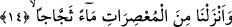

Şeyh (rh.) el-Fethu’l-Mekki’de der ki: Yıldızlara gelince onların tamamı cehennemde
olacaklardır. Öte yandan güneş, ay ve bunların doğup batmaları dâimâ cehennemde
olacaktır.
Fakîr (Bursevî)’ye göre yukardaki açıklama ile bu ifâdeyi birbiriyle uzlaştırmak
gerekirse şöyle diyebiliriz: Güneş ve aydan her biri hem nur hem harâret taşımaktadır.
Bunlardaki nur kabilinden olan şeyler Allah Teâlâ’nın arşı ile bitişecektir. Bunların
herhangi bir maddî varlıkları yoktur. Çünkü maddî varlığı olan şey gılzat/kabalık,
zulmet/karanlık ve kesafetten hâlî değildir. Dolayısıyla bunlardaki ateş ve ısı kabilinden
olan özellikler maddî varlıklarıyla birlikte ateşe bitişeceklerdir. Yâni bu iki özellikten
herbiri kendi aslına dönecektir.
Eğer “Zâhir olanı, ay ile güneşin nurlarının Peygamber Efendimiz’in nuru ile bitişmesi
idi. Çünkü ay ve güneşin nuru Peygamberimiz’in nurundan yaratılmışlardı” denecek
olursa, bu soruya şöyle cevap vermek mümkündür: Arş ve kürsî, Peygamber
Efendimiz’in nurundan yaratılmışlardır. Ay ile güneş ise arşın nurundan yaratılmışlardır.
Şu halde bu ikisi aslında Peygamber Efendimiz’in nurundan yaratılmış olup, onların
nuru Efendimiz’in nuruna bitişiktirler. Dolayısıyla bütün bunların tümü Efendimiz’in
nurudur. Hamd ise Allah’a âiddir.
Dokuz felek ve yedi gezegenin mesnedi olan güneş
Rasûller hâtemi, peygamberler efendisi Muhammed (s.a.)’dir.
14. Üstüste yığılıp sıkışan bulutlardan şarıl şarıl akan sular indirdik.
Buradaki “enzelnâ/biz indirdik” fiilindeki “biz” anlamına gelen “nâ” zamirindeki
“nun” azamet ifâde etmektedir. Ayrıca bu nûnun getiriliş amacı, zât, isim ve sıfatların
cem’iyyetine işâret etmek içindir.
“Mu’sırât” rüzgarlar tarafından sıkıştırılmış olup yağmuru damlatması yaklaşan, bir
başka ifâdeyle sıkılması yaklaşan ama henüz sıkılıp suyu akıtılmayan bulutlar demektir.
Zira “indirmek” bizâtihî suyu sıkılıp akıtılan bulutlardan değil, akıtılmaya hazır olan
bulutlardan yapılır. Eğer bu suyu akmakta ve yağmur vermekte olan bulutlardan olsaydı
o zaman “tahsîlu’l-hâsıl” olurdu. Yâni zâten elde edilmiş bulunan şey, bir daha elde
ediliyormuş gibi olurdu.
Biz, “mu’sırât” kelimesine “sıkılmaya yüz tutmuş” anlamını verdik. Bunun sebebi,
kelimenin fiili olan “u’sira”nın başındaki “hemze”nin “haynûnet/vakti gelmek”
anlamında olmasından dolayıdır. Dolayısıyla “mu’sırat” ism-i fâil olup, mânâsı
yukarıda belirttiğimiz gibi “sıkılması yaklaşmış, yağmur vermek üzere olan bulut”
demektir. Nitekim bu kelimenin kalıbında gelen başka fiillerde de “hemze” harfi yine